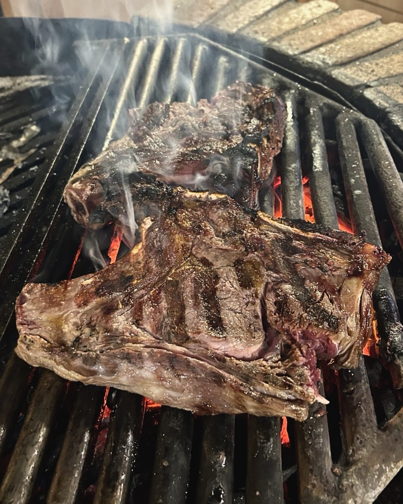
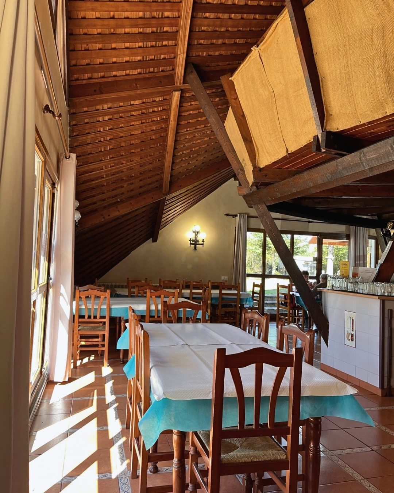
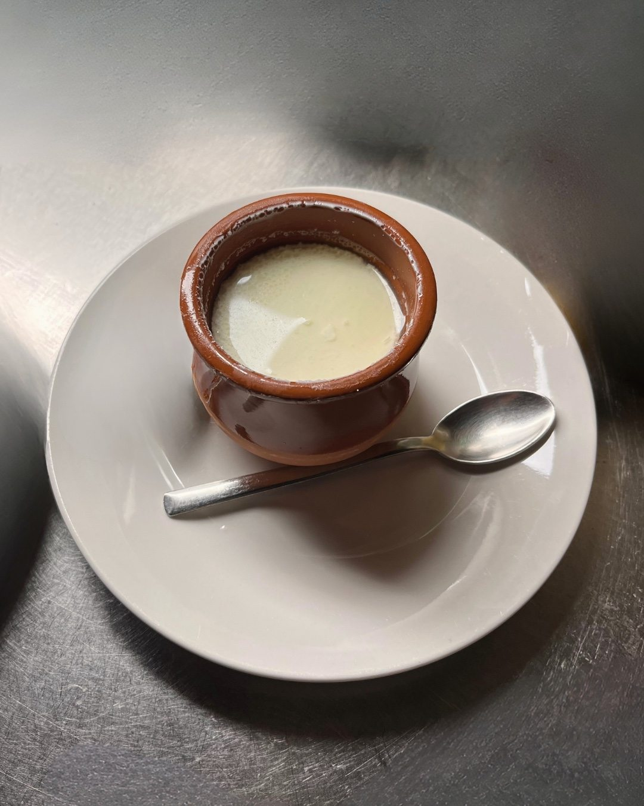
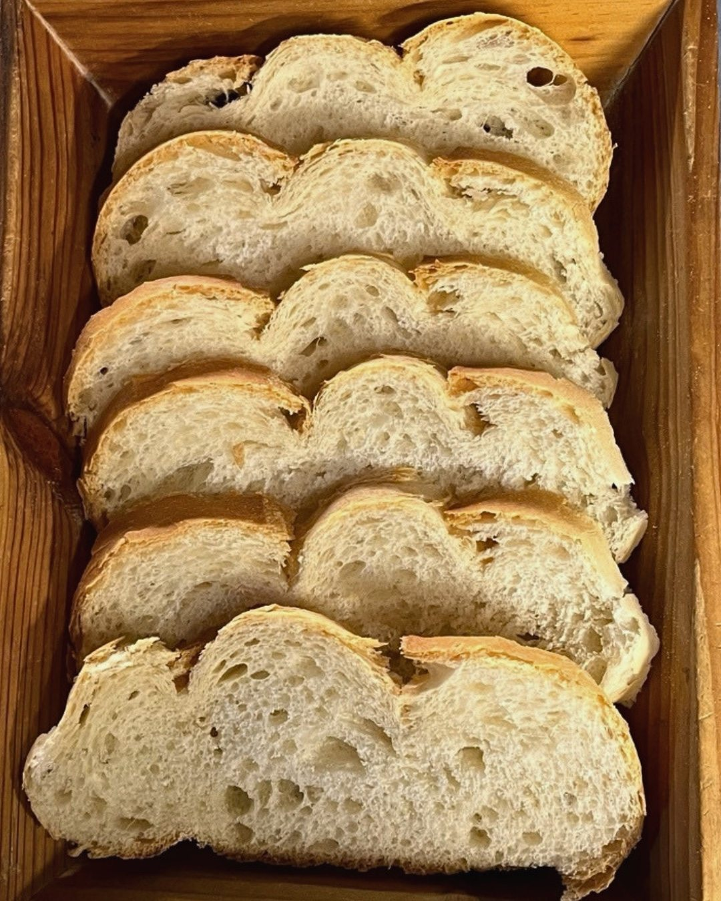
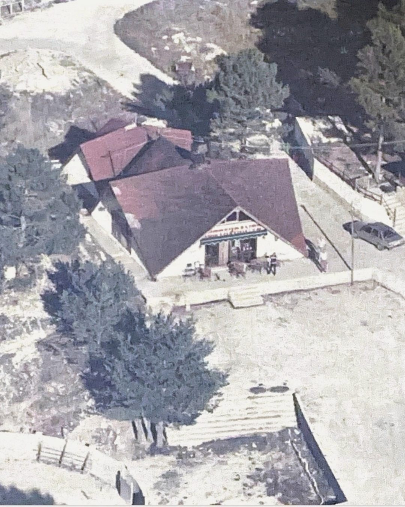
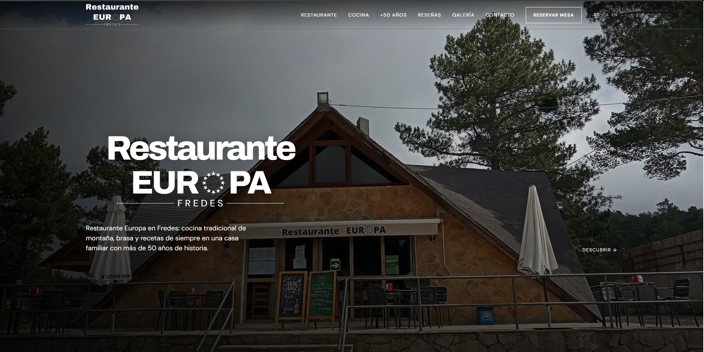
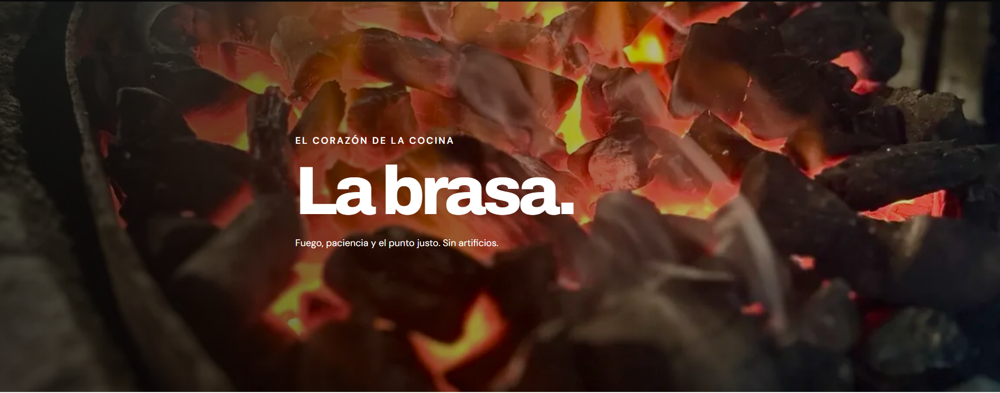
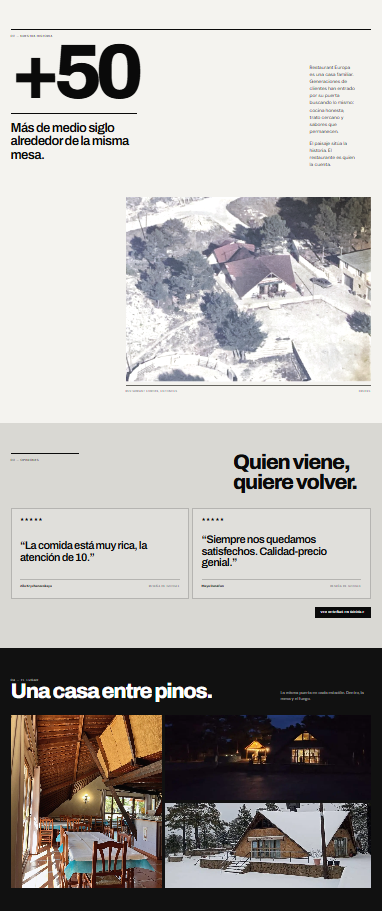
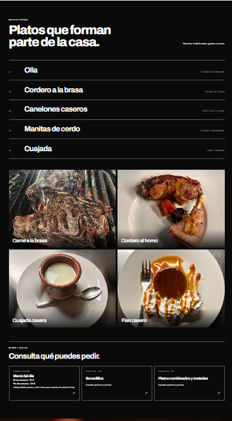
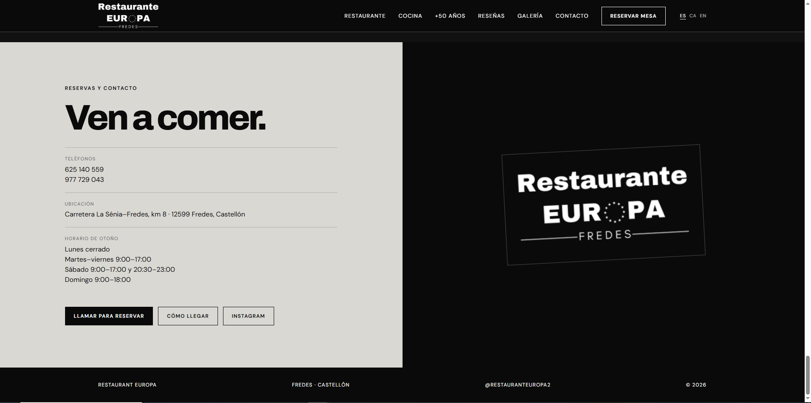

Restaurante
Europa.
IDENTIDAD VISUAL / DIRECCIÓN DE ARTE / WEB / REDES — FREDES, CASTELLÓ

01 — EL PROYECTO
Tradición,
otra mirada.
Restaurante Europa es un negocio familiar situado en Fredes, con más de 50 años de historia. El proyecto traslada su carácter a una presencia digital contemporánea sin perder la cercanía, la cocina tradicional y el vínculo con el entorno.


02 — LENGUAJE VISUAL
Una identidad
con raíces.
Una identidad visual que parte de lo esencial: el fuego, la madera, las recetas de siempre y la historia del lugar. Tipografía con carácter, tonos cálidos y fotografía natural para construir un lenguaje reconocible, cercano y auténtico.
03 — DIRECCIÓN DE ARTE
Palabras de casa.









04 — PRESENCIA DIGITAL
Más allá
de la mesa.
La dirección visual se aplica a las redes sociales, la página web y la comunicación digital, creando una presencia reconocible y coherente en distintos formatos.
WEB / REDES SOCIALES / CONTENIDO VISUAL

Diseño web, estructura de contenidos y experiencia digital para trasladar la esencia del restaurante a la pantalla.

Una web que combina grandes titulares, contrastes y fotografías para contar la historia del lugar.



Más de 50 años de historia.
Una nueva forma de contarla.